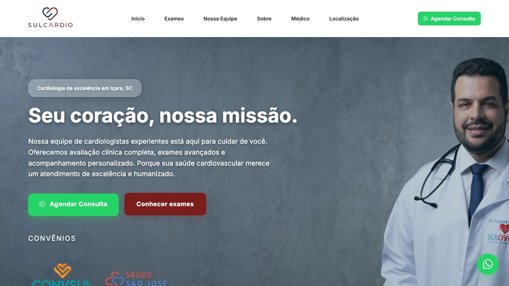

CASE 03
SULCARDIO Clínica Cardiológica
Site institucional construído do zero pra uma clínica de cardiologia consolidada desde 2010. O objetivo era comunicar autoridade através de números reais — mais de 10 mil pacientes atendidos, 15 anos de experiência, 50 mil exames realizados — e facilitar o agendamento de consultas e exames. Acompanho o tráfego pago do cliente.
Ver site ao vivo ↗sulcardio.com.br
